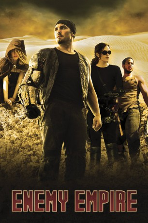

#2416 Furious Road
Alternativ: Enemy Empire (Originaltitel)
 
 IMDB-Wertung: 3.1 / 10
IMDB-Wertung: 3.1 / 10  Metascore: 0
Metascore: 0 
Sol, a bold fugitive lost in a dangerous post-apocalyptic desert world, searches for a missing woman named Catherine and her illusive captor, the Nomad King. With enemies at every turn, Sol's only chance of finding Catherine is with the help of a rogue and mysterious wanderer, Cleo.
Jahr: 2013
Dauer: 97 Minuten
FSK: 18
Land: USA Studio: Devolver Digital FilmsTonspuren: DTS - ,
Untertitel: Deutsch,
Auflösung: 1080p (1920x800) Größe: 3584 MB
Genre: Sci-Fi, Abenteuer, Fantasy
Regisseur: Michael Ryan Hahn
Drehbuch: Michael Ryan Hahn
Soundtrack: Noel Melanio
Darsteller:
- Tristan James Butler als Sol / Warrior / Henry / Prisoner / voice of Warrior
- Elisabeth Meurer als Cleo / Misty / Oracle / Prisoner / Warrior
- Morgan Roberts als Prisoner / Theodore / Creature / voice of Prisoner
- Andre Hall als Tut
- Bryan Bellomo als Surgeon / Nomad #1
- Chris Kelley als Scout Captain / Creature
- Alexander Aguila als Warrior / Nomad #2
 Joanne Baron als Oracle / voice of Oracle
Joanne Baron als Oracle / voice of Oracle- Alejandro Edda als Ongel
- Nevin Millan als Alexander / voice of Invisibles
- Derek Berg als Scout Sergeant
- Ralph Riddle als Giric
- Justus Zimmerman als The Duke of Lear
- Harry Smith als Henry
- Jennifer La Mana als Ann
- Nathan Meurer als voice of Radio Commander
- Ryan Blindauer als Invisible who appears
- Judy Meurer als voice of Rope Girl
- Sarah Mansour als Creature
- Dan Kelly als Scout / Dead Body
Datei: X:\FSK18-2013\Furious Road (2013, FSK18, 1920x800).mkv seit 06.11.2015
Festplatte: FSK18
 Es gibt insgesamt 26 Filme in der Gruppe 'FSK18-2013'
Es gibt insgesamt 26 Filme in der Gruppe 'FSK18-2013'